Contents · 53 slides
- The Illustrated Jane Jacobs
- Introduction
- Introduction
- Introduction
- Introduction
- Introduction
- The uses of sidewalks: safety
- The uses of sidewalks: safety
- The uses of sidewalks: safety
- The uses of sidewalks: safety
- The uses of sidewalks: contact
- The uses of sidewalks: contact
- The uses of sidewalks: assimilating children
- The uses of neighborhood parks
- The uses of neighborhood parks
- The uses of city neighborhoods
- The uses of city neighborhoods
- The generators of diversity
- The generators of diversity
- The generators of diversity
- The generators of diversity
- The need for mixed primary uses
- The need for mixed primary uses
- The need for mixed primary uses
- The need for mixed primary uses
- The need for mixed primary uses
- The need for mixed primary uses
- The need for mixed primary uses
- The need for small blocks
- The need for small blocks
- The need for aged buildings
- The need for aged buildings
- The need for aged buildings
- The need for concentration
- The need for concentration
- The need for concentration
- The need for concentration
- The need for concentration
- Some myths about diversity
- Some myths about diversity
- Some myths about diversity
- Some myths about diversity
- The self-destruction of diversity
- The curse of border vacuums
- The curse of border vacuums
- Unslumming and slumming
- Gradual money and cataclysmic money
- Subsidizing dwellings
- Erosion of cities or attrition of automobiles
- Visual order: its limitations and possibilities
- Salvaging projects
- Governing and planning districts
- The kind of problem a city is
1 The Illustrated Jane Jacobs
- Cities, Culture, and Economy
2 Introduction
- The disaster of mid-century urban planning

3 Introduction
- Historical roots: Howard and the Garden City
4 Introduction
- Historical roots: Le Corbusier and the Radiant City
5 Introduction
- Historical roots: Le Corbusier and the Radiant City
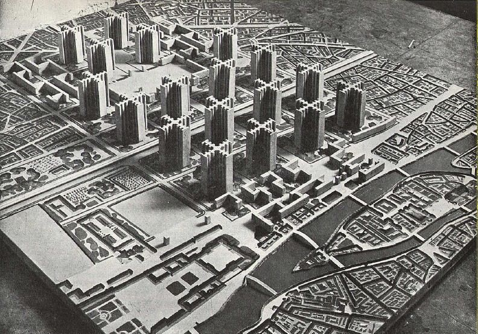
6 Introduction
- Historical roots: the Monumental City
7 The uses of sidewalks: safety
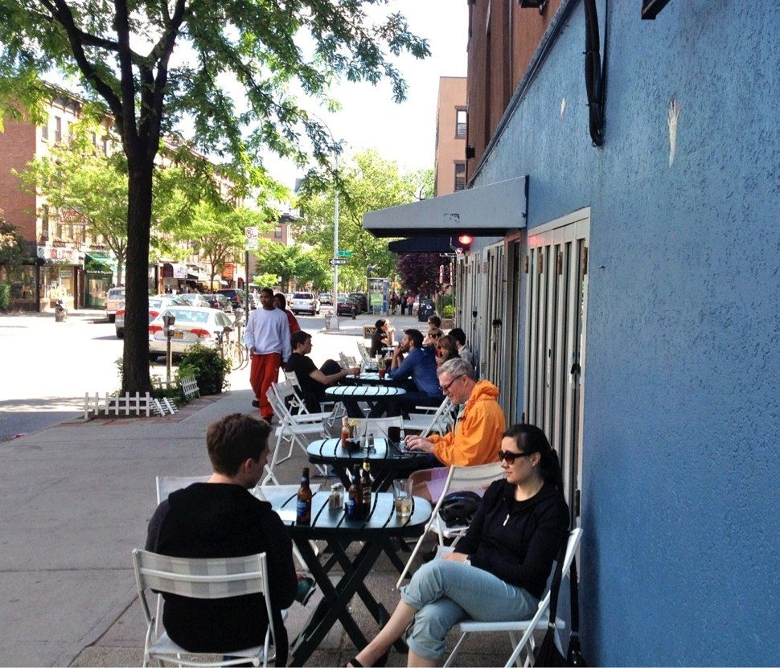
8 The uses of sidewalks: safety
- “Stores, bars and restaurants… work in several different and complex ways to abet sidewalk safety
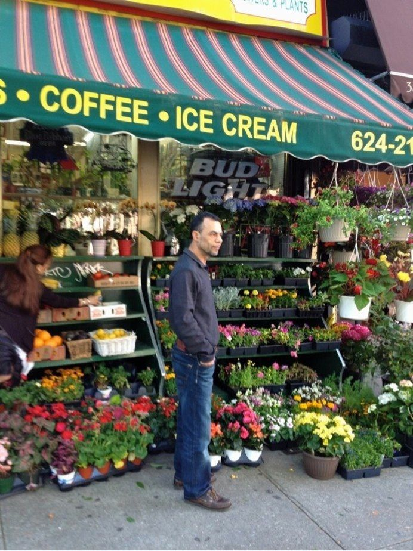
9 The uses of sidewalks: safety
- “storekeepers and other small businessmen are typically strong proponents of peace and order themselves.”
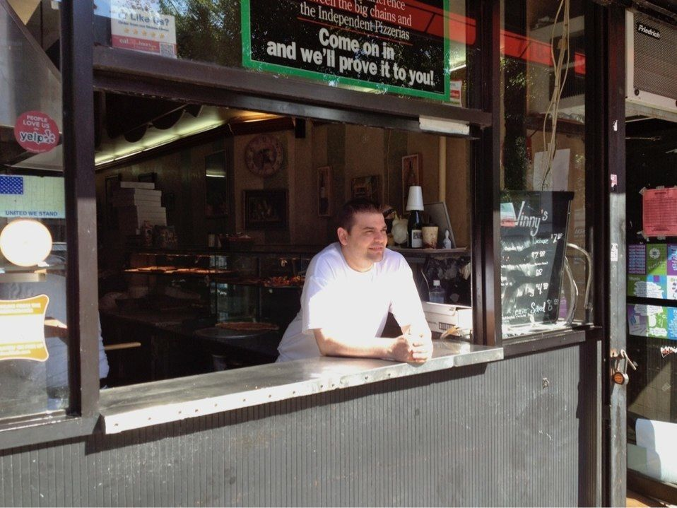
10 The uses of sidewalks: safety
- “the sight of people attracts still other people… something city planners… seem to find in comprehensible. They operate on the premise that city people see the site of emptiness, obvious order and quiet.”
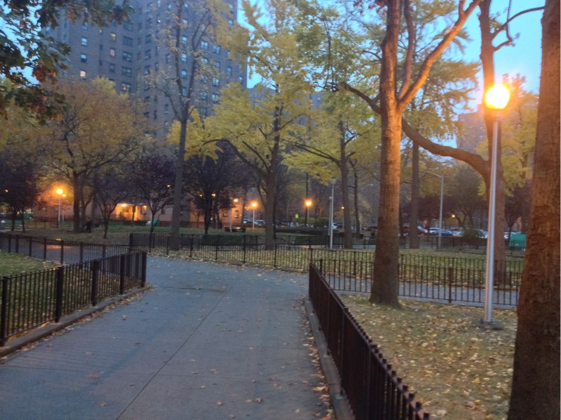
11 The uses of sidewalks: contact
- “[With lively street life] it is possible in a city street neighborhood to know all kinds of people without unwelcome entanglement, without boredom, necessity for excuses…
12 The uses of sidewalks: contact
- “Such relationships can, and do, endure… for decades; they could never have formed without that line…”
13 The uses of sidewalks: assimilating children
- “You can go out, but stay on the sidewalk!”
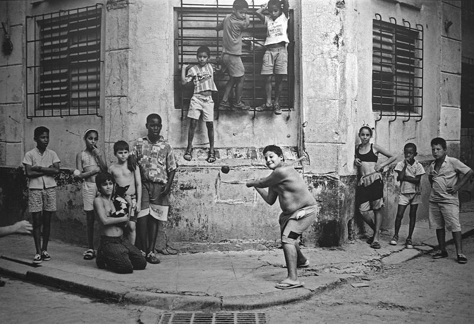
14 The uses of neighborhood parks
- “This mixture of uses of buildings produces for the park a mixture of users who enter and leave the park at different times.”
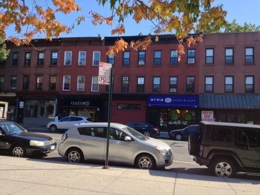
15 The uses of neighborhood parks
- “there is no point in bringing parks to where the people are, if in the process the reasons that the people are there are wiped out…”
16 The uses of city neighborhoods
- “It is fashionable to suppose that certain touchstones of the good life create good neighborhoods—schools, parks, clean housing and the like. How easy life would be if this were so! How charming to control a complicated and ornery society by bestowing upon it rather simple physical goodies.”
17 The uses of city neighborhoods
- “We shall have something solid to chew on if we think of city neighborhoods as mundane organs of self-government. Or failures with city neighborhoods are, ultimately, failures, in localized self-government. And our successes are successes at localized self-government.”
18 The generators of diversity
- “Characteristically, the larger a city, the greater the variety of its manufacturing, and also the greater both the number and the proportion of its small manufacturers.”
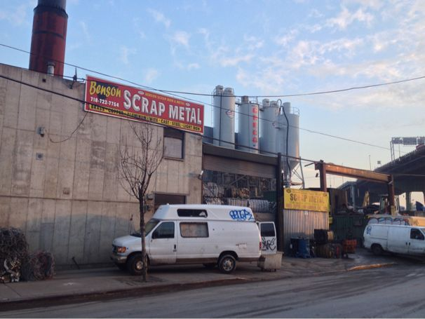
19 The generators of diversity
- “City diversity itself permits and stimulates more diversity.”
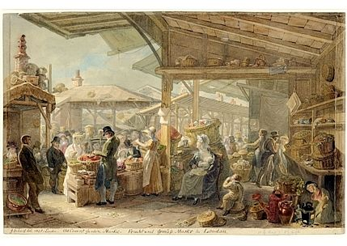
20 The generators of diversity
- “The benefits that cities offer to smallness are just as marked in retail trade, cultural facilities and entertainment. This is because city populations are large enough to support wide ranges of variety and choice in these things.”
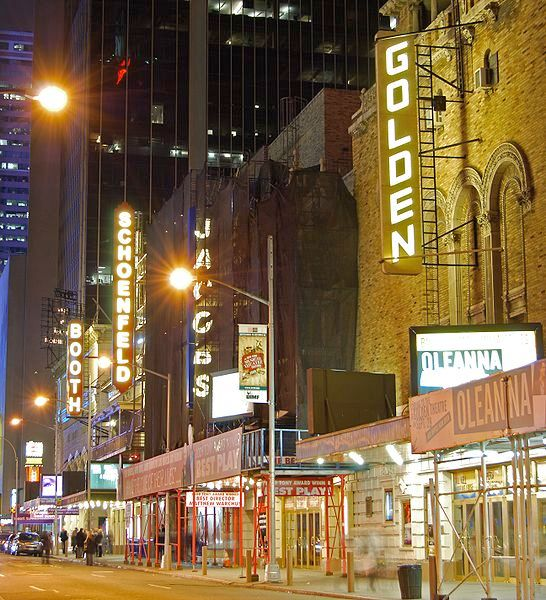
21 The generators of diversity
- “With urbanization, the big get bigger, but the small also get more numerous.”
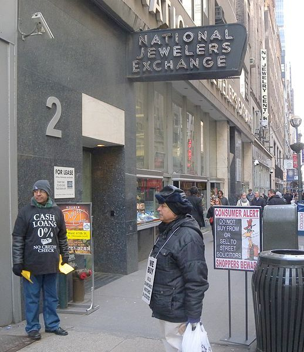
22 The need for mixed primary uses
- These create people on the street at various times of day.
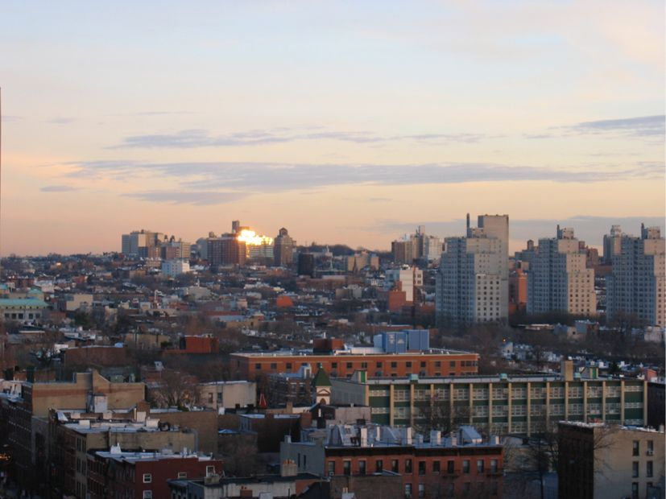
23 The need for mixed primary uses
- What to do about lower Manhattan? “Part of the district’s waterfront should become a great marine museum.”
24 The need for mixed primary uses
- Lower Manahattan: “If new sea-food restaurants and much else would not start up nearby, I will eat my lobster shell.”
25 The need for mixed primary uses
- “This is why projects such as cultural or civic centers, besides being woefully unbalanced themselves as a rule, are tragic in their effects on their cities. They isolate uses—and too often intensive night uses too—from parts of cities that must have been or sicken.”
26 The need for mixed primary uses
- The people who live in a neighborhood and those who work there “support [diversity] together by unconsciously cooperating economically.”
27 The need for mixed primary uses
- “If… functional needs are considered and respected, esthetic theories that glorify sorted-out and isolated uses, either ‘sacred’ or ‘profane,’ are impossible to apply.
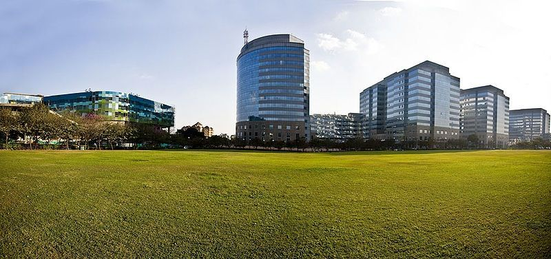
28 The need for mixed primary uses
- Single-use neighborhoods are unsafe when their primary uses are not “in session”
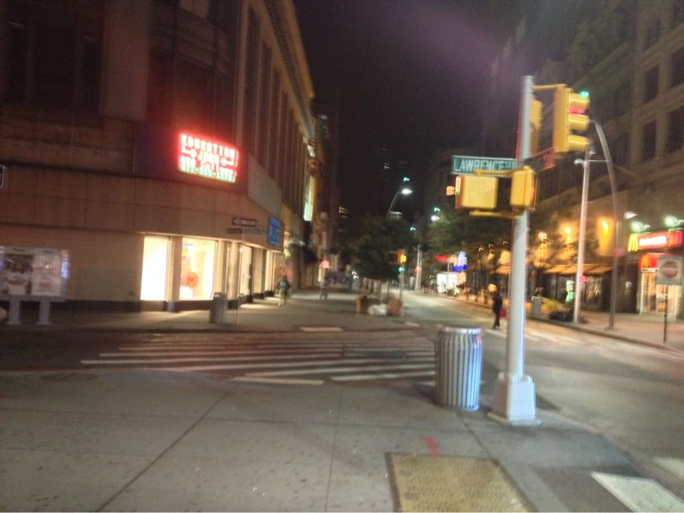
29 The need for small blocks
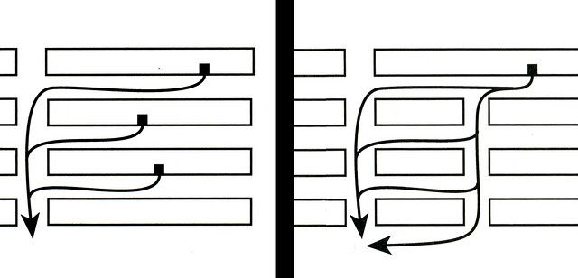
30 The need for small blocks
- “Long blocks, in their nature, thwart the potential advantages that cities offer to incubation, experimentation, and many small or special enterprises…”
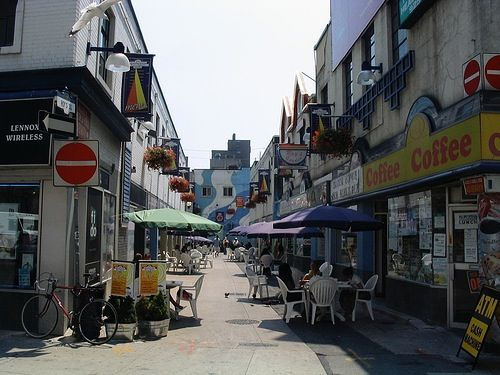
31 The need for aged buildings
- “Among the most admirable and enjoyable sites to be found along the sidewalks a big cities for the ingenious adaptations old quarters to new uses.”
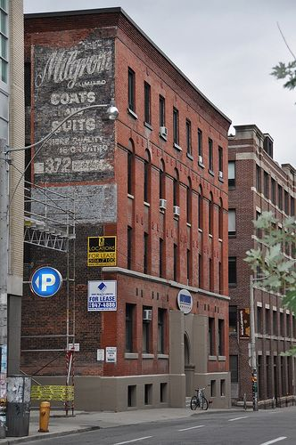
32 The need for aged buildings
- “Neighborhoods built up all at once change little physically over the years as a rule . . . The neighborhood shows a strange inability to update itself, enliven itself, repair itself, or to be sought after, out of choice, by a new generation. It is dead. Actually it was dead from birth, but nobody noticed this much until the corpse began to smell.”
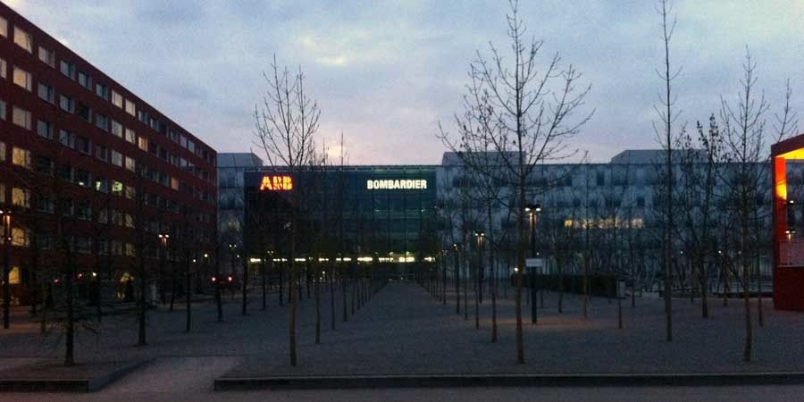
33 The need for aged buildings
- “The only harm of aged buildings to city district or street is the harm that eventually calms of nothing but old age—behind that lives with everything being home and everything becoming worn out. But his city area in such a situation is not a failure because of being old. Is the other way around. The area is all old because it is a failure.”
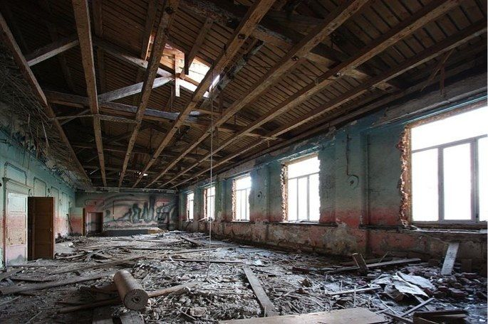

34 The need for concentration
- “In Brooklyn… the most generally admired, popular and upgrading neighborhood is Brooklyn Heights; he has much the highest density of dwellings in Brooklyn.”
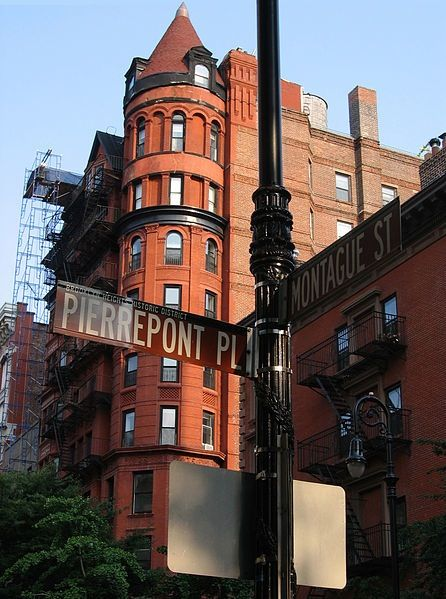
35 The need for concentration
- “Tremendous expanses of failed or decaying Brooklyn gray area have densities half those of Brooklyn Heights or less.”
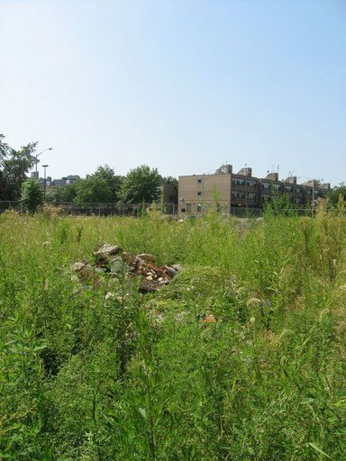
36 The need for concentration
- “Between 10 and 20 dwellings to the acre yields a kind of semisuburb… these arrangements, although there apt to be dull, can be viable and safe if they are secluded from city life…”

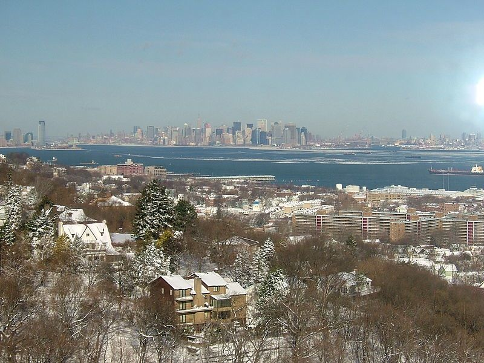
37 The need for concentration
- “Maximum efficiency, or anything approaching, means standardization.”
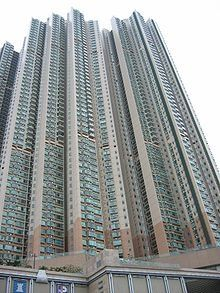
38 The need for concentration
- “At low [ground] coverages, if the densities are high enough to help engender city diversity, they are automatically too high to permit diversity.”
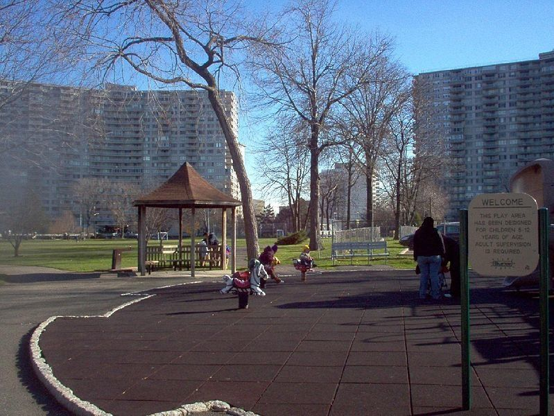
39 Some myths about diversity
- Mixed-uses look ugly. They cause traffic congestion. They invite ruinous uses.
- “The [above] are some of the bugbears that cause cities to combat diversity. These beliefs help shape city zoning regulations. They have helped rationalize city rebuilding into the sterile, regimented, empty thing it is.”
40 Some myths about diversity
- “The trouble represented by junkyards goes deeper then the Blight Fighters can plumb… The problem is to cultivate an economic environment in the district which makes more vital uses of the land profitable and logical. If this is not done, the land might as well be used for junkyards, which after all have some use.”
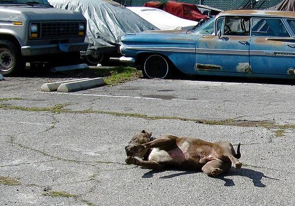
41 Some myths about diversity
- “Cities have the capability of providing something for everybody, only because, and only when, they are created by everybody.”
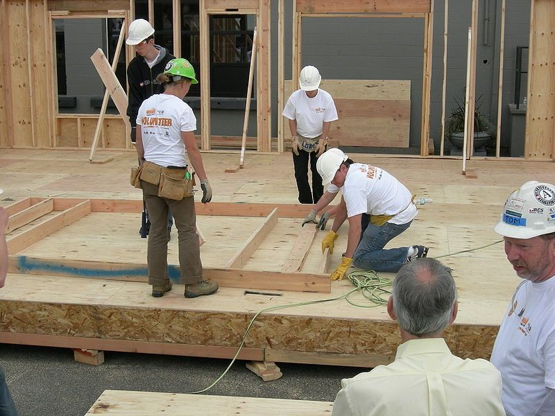
42 Some myths about diversity
- “The supposed disadvantages [of diversity] are based on images of unsuccessful districts which have not too much, but too little diversity.”
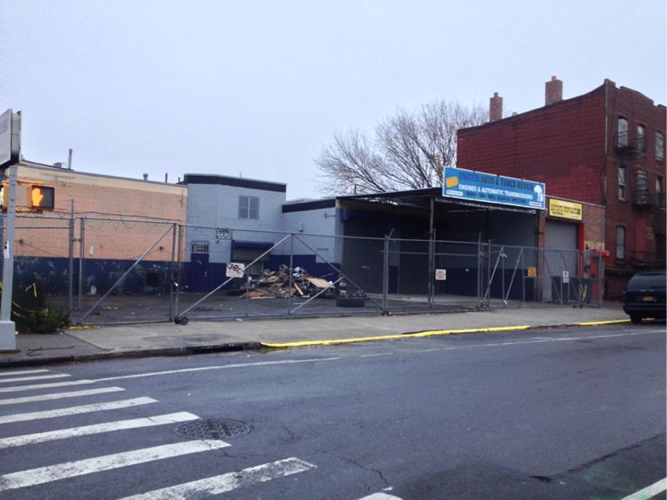

43 The self-destruction of diversity
44 The curse of border vacuums
- Border vacuums are daunting to cross and splinter neighborhoods
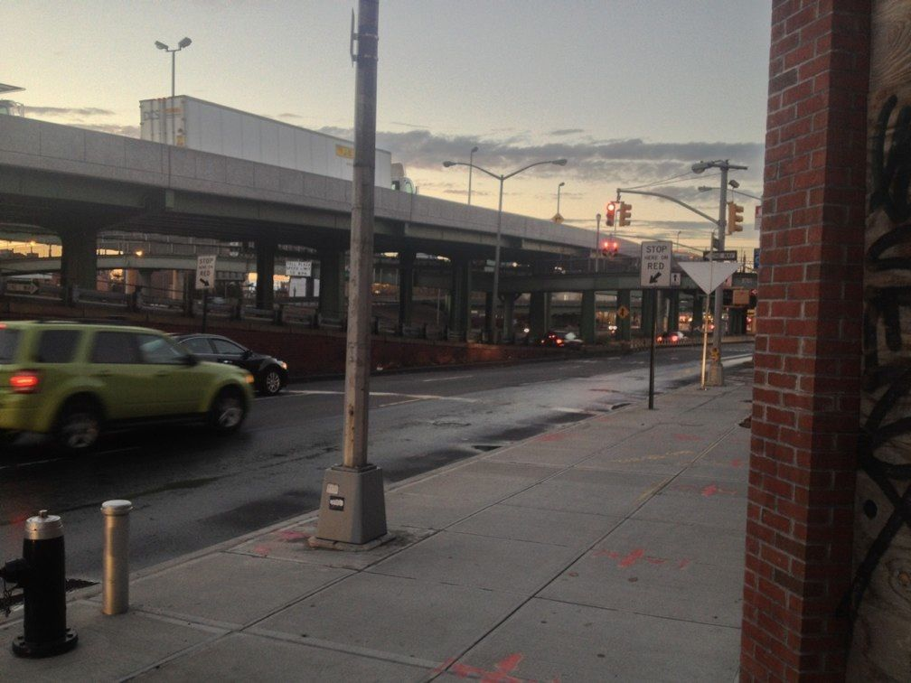
45 The curse of border vacuums
- The surrounding areas accumulate low-value uses
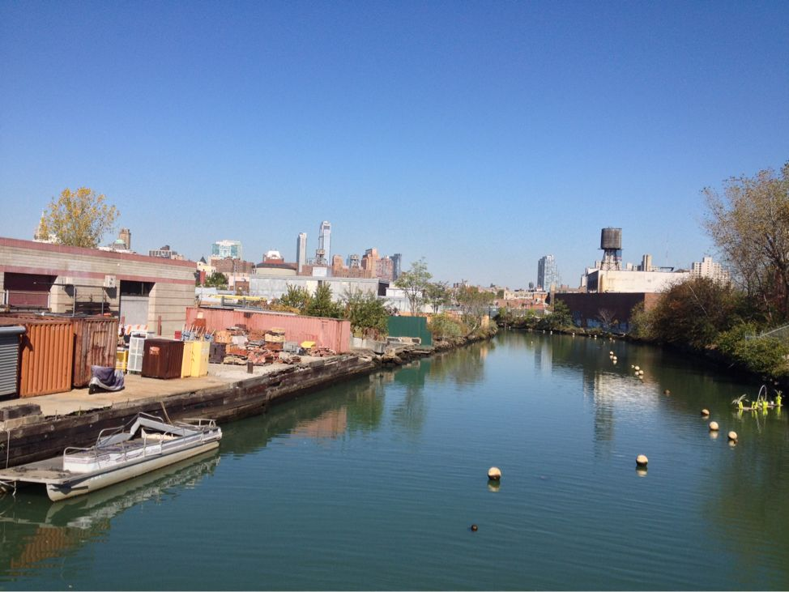
46 Unslumming and slumming
47 Gradual money and cataclysmic money
49 Erosion of cities or attrition of automobiles
50 Visual order: its limitations and possibilities
52 Governing and planning districts
53 The kind of problem a city is